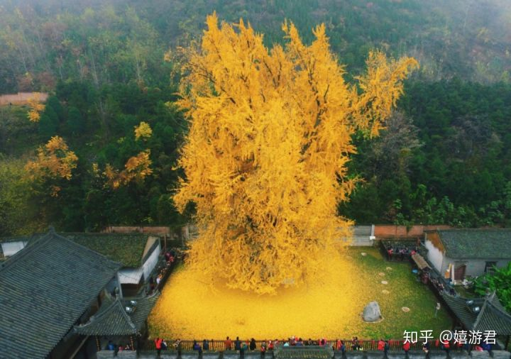
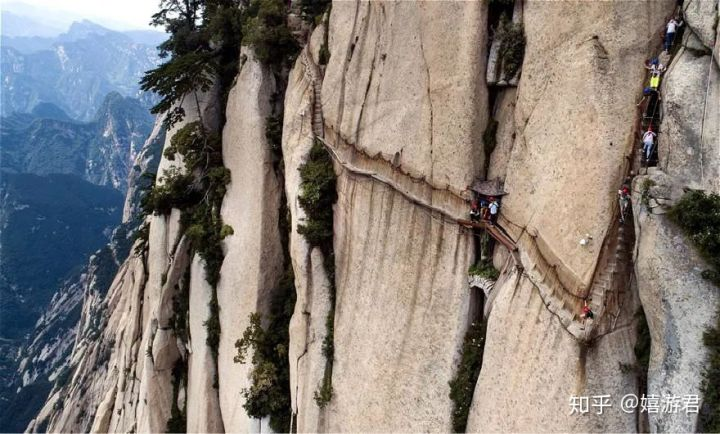
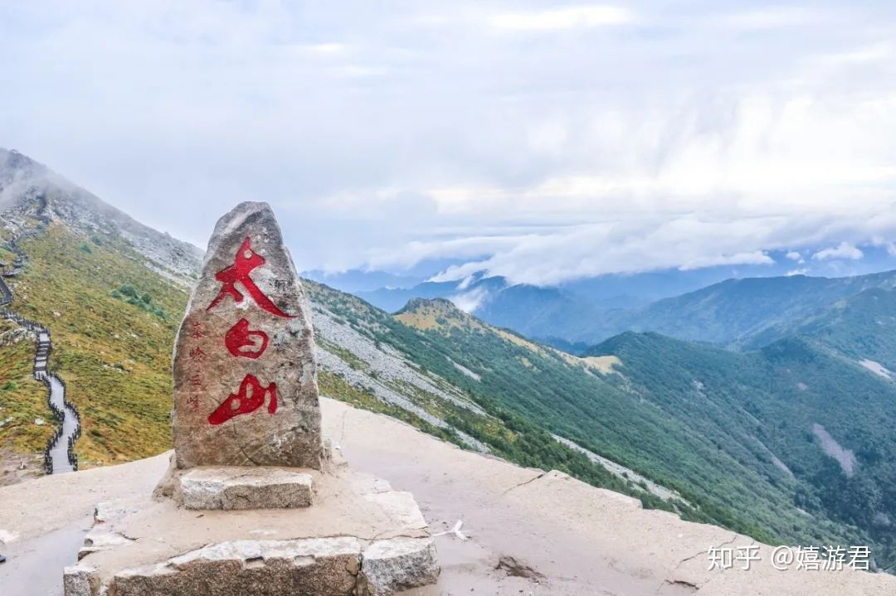
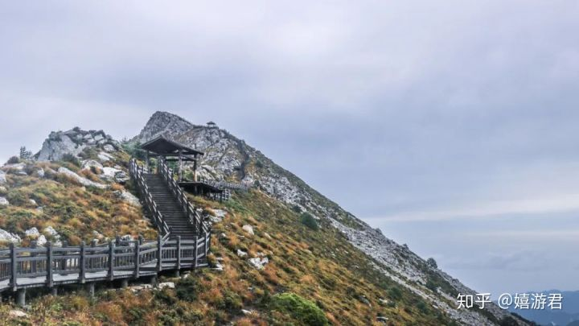
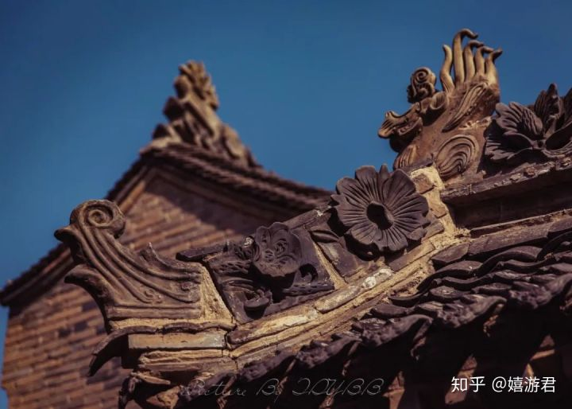
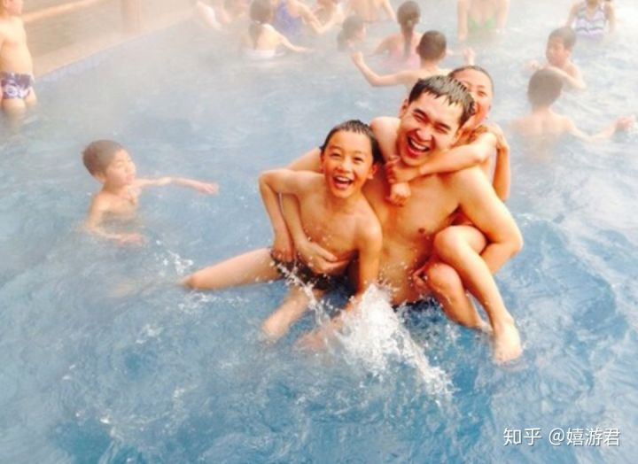
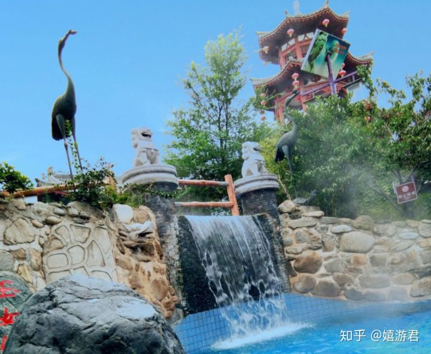
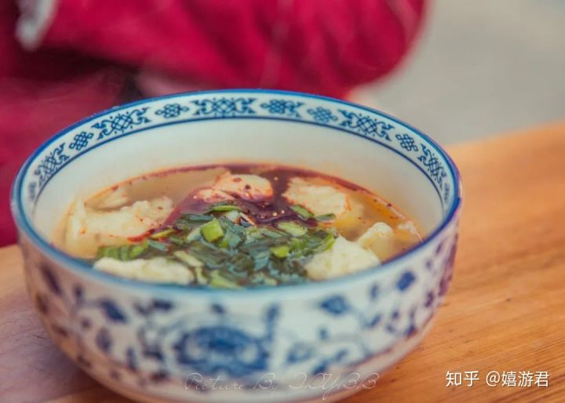
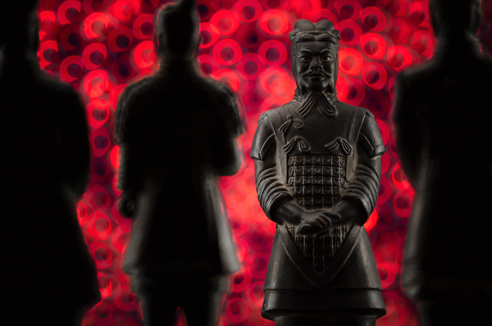

西安周边一日游
1.汉阳陵博物馆
时间： 车程1小时。
作为十三朝古都，西安的陵园实在不少，光皇帝的就有近50处。
汉代共有六次盛世，第一次是「文景之治」。这座汉阳陵就是共同开创这次盛世的汉景帝刘启（刘彻的爹）和皇后的合葬陵园。
为啥偏要安利它呢？因为它是迄今发现的保存最完整的汉代帝陵陵园。过去帝王家族的礼制和生活习惯，都可以从这处陵园中知晓一二。
俗话说内行看门道，外行看热闹，推荐大家来这儿其实还有一个理由：庞大的陪葬坑在原址上被设计成了一处地下参观的独立展馆。
隔着玻璃，脚下就是原模原样的遗址。那些陪葬品和墓坑的布局，在俯视的视角下能看得特别清晰。
如此特别的体验，光这一个馆感觉值回票价了。
汉阳陵还出土了大量精美的陶俑、铜器和印章。在考古馆里，你能看到2000多年前古人的手艺活。汉陶俑特别值得一看，我觉得比秦俑更有艺术感和美感。
对了，如果你是秋天来，一定要记得去博物馆里那片银杏林，树叶铺了一地金黄的美景可别错过。
逛完博物馆，安利大家去附近的西安浐灞国家湿地公园走一圈。
每个季节来，它都有不同的色彩给你看，特别出片。尤其是秋天，一片金黄再配上落日的余晖，美到舍不得闭眼。
原本这个湿地公园可是个收费的4A的景区，19年开始免费对公众开放，好多本地人会在周末来公园里放风筝、散步、骑车、野餐，是个特别亲子的地方，就像杭州西溪湿地般的存在，隐秘又美好。
2.古观音禅寺
时间： 车程1小时。
我记得每年秋天，古观音禅寺里那棵李世民亲手中的银杏树都会刷一波存在感。这棵已经历经千年的古树确实美得有点超凡，连带着整个寺庙都惊艳起来。


古观音禅寺位于终南山山脚下，始建于唐朝贞观年间，本身就是一座千年古刹。浓浓的禅意，在每一次呼吸中打通你的感官世界。 因为银杏树带火了这里，所以现在得提前在公众号上预约，才能入寺参观。
寺内还有一汪古泉水，常年清澈甘冽。传说，观音复活了唐太宗误杀的青龙，放入这口泉中，所以它叫做龙泉，也叫观音泉。这水拿来泡茶，肯定是极好的。
3.华山
时间： 车程40分钟。
交通方式： 高铁（西安北-华山北）
华山属于华阴市，就是华阴老腔诞生的地方。
五岳里面我最有兴趣的就是华山，因为它不但是最高的，也是最险峻的。网上很火的「鹞子翻身」、「长空栈道」就在华山的东峰和南峰上。
华山怎么玩？ 或许你想不到，爬华山你需要准备一双粗棉布手套，搬砖的那种。因为华山陡峭到有些地方你要抓住两侧的铁链前行。 华山最高峰有2000多米，山顶气温比较低，还需要备件外套。

华山一共5个峰，不是每一段都有索道坐的，有些路必须靠腿，所以能量高的干粮得背点，水可以带一些，喝完沿途可以买。

完整的上山路线按照玉泉院 - 北峰 - 中锋 - 东峰 一路上行。 北峰段的百尺峡和千尺幢是爬华山的精髓所在，又窄又陡，但只有走过才知华山之险。这儿还有垂直90度的云梯，考验体力也考验胆量。
下山路线是东峰 - 南峰 - 西峰 。南峰，也就是华山最高峰，虽然现在长空栈道已经关闭了，不过还有别的路可以上去，看到一块石碑那就是登顶啦。

时间决定路线，如果是一日游，耗时4小时的北峰这段路和登顶南峰只能选择一个，不然时间可能来不及，全程大概需要9个小时。
寺内还有一汪古泉水，常年清澈甘冽。传说，观音复活了唐太宗误杀的青龙，放入这口泉中，所以它叫做龙泉，也叫观音泉。这水拿来泡茶，肯定是极好的。
4.太白山
时间： 车程1小时。
交通方式： 高铁（西安北 - 宝鸡南）
如果你已经爬过了华山，那么可以去太白山转转，在高铁站有直达的大巴车可以坐，1小时到山脚下。
上学的时候大家都学过秦岭 - 淮河一线是中国南北的分界线，而太白山就是秦岭山脉的最高峰，比华山还高，海拔有3767米。

太白山虽不像华山那样险峻，但它更秀丽、更有探寻秘境的感觉。进入到太白山自然保护区后，你可以看到第四纪冰川遗迹。而山顶的大爷海已有万年历史，湖水来自秦岭的雪山融水，纯净无比。
太白山怎么玩？
太白山分南线和北线，很多徒步爱好者会选择南北穿越的路线。随着海拔攀升，气温逐渐降低，植被也不停变化。就算是盛夏，山顶也还是有积雪。所以好多人会说，上山一天，却像是经历了一年的风景。

普通游客一般只走开发更完善的北线，南线更野一点，需要有登山经验的人才可以走。
北线上山有三条路，大多人会选择从东边的入口开始爬山，这段容易走些，风景也不错。
我们都听过佛教名山XXX、道教名山XXX，但太白山拒绝被定义，山上佛、道、儒三种文化同生共存，这里既有按道教神仙族谱建造的一系列庙宇，也有佛教的相关的建筑。
如果想品味太白山的宗教文化，可以走西边的路线上山，这一路建筑最多。

太白山上，有一条始建于三国时期的古栈道，又叫太白鸟道。这个名字来源于李白《蜀道难》中的「太白有鸟道，可以横绝峨眉巅」一句，一读你就知道它的特色就是险。
从山脚下到下板寺这段，你可以坐车也可以步行。都是木栈道所以走起来并不累，路程大概1个多小时。
下板寺到上板寺，建议大家坐缆车，不然体力跟不上。到了上板寺海拔就有3000米了，或许会有高反出现。

一日游的行程，到天圆地方就算结束了。
再往上走，就是太白山自然保护区，一天爬不完。在这片纯天然的秘境里，有太白山的最高峰拔仙台，前面说的第四纪冰川遗迹和高山湖泊也在保护区内。
5.蓝田
时间： 车程2小时。
交通方式： 包车/市内大巴车
单说蓝田，你可能没啥印象。但是我说起「蓝田日暖玉生烟」这句诗，再说起蓝田玉，你肯定恍然大悟。没错，这里的蓝田都说的正是西安的宝藏县城蓝田。
很多人来蓝田是为了去白鹿原影视基地，因为这儿就是那部电影的取景地，所以走进电影情节里，那是分分钟的事儿。

虽然这里都是根据小说设计的仿古建筑，但看得出仿得还是挺走心的，角角落落的细节都很美。

来白鹿原影视城不是光看建筑这么简单，在铁匠铺真有人在打铁，户外还有实景演出。
民俗华阴老腔也可以听得到，陕西人豪爽的性格全在老人们这一嗓子里了。


除了白鹿原，蓝田的汤峪温泉西安本地人基本都知道，它在汉唐就已经很热闹了，还是帝王曾经亲临过的御用温泉，传说李隆基和杨贵妃一起来过这儿。

汤峪的碧水湾是整个西北最大的一处露天温泉，整体配套设施都挺完善，住宿啥的也都有。徜徉于自然间，身心皆放松。

其实西安周边能泡温泉的地方不少，华山、太白山都有温泉，临潼还有悦椿温泉。推荐大家来蓝田，有一层原因是这儿美食实在很丰富。
Q弹又爽口的酸菜糍粑，牙齿和味蕾的双重享受。蓝田的糍粑是用洋芋做的，有独特的香味。

蓝田神仙粉、蓝田苦荞饸饹、蓝田醋粉、蓝田空心挂面……都是当地特色小吃。实不相瞒，蓝田还有个隐藏的身份是厨师之乡，那东西能不好吃吗？

6.兵马俑+华清池
时间： 车程2小时。
交通方式： 包车/市内大巴车
兵马俑，无人不知无人不晓，世界八大奇迹之一肯定不容错过。华清池相传为杨贵妃沐浴之地，白居易《骊宫高》诗：“骊宫高兮入云”。

迈步于兵马俑博物馆当中，感受历史的脉动。

在华清池享受那一缕清风，追随古人的脚步一起体验那一抹春色。

来到了兵马俑，可以一睹大秦帝国当年的风采。同时在秦俑坑旁如果运气好还能碰到正在进行文物清理工作的学者。


西安本地人都知道，兵马俑和华清池可以在一天之内浏览完。

如果说兵马俑感受到的是秦的威严，那到了华清池感受到的是唐韵。

在结束了一天的行程之后，漫步于华清池景区，还可以欣赏到唐朝流传下来的舞蹈表演。